MacSync
Keep all your Macs set up the same way: one Dock, the same apps, the same settings.
brew tap onlymoein/tap brew trust onlymoein/tap brew install --cask macsync
Or install with Homebrew: paste that in Terminal.
Why MacSync
Sit down at any Mac and it feels like yours.
- Your Docks are combined: add an app on one Mac and it's on all of them, in the same order.
- Apps you have on one Mac are offered on the others, one click each.
- Trackpad, keyboard, Finder and more stay the same everywhere.
- Nothing changes until you press Apply, and every Apply can be undone.
- Everything stays in your own iCloud Drive. No server, no account.
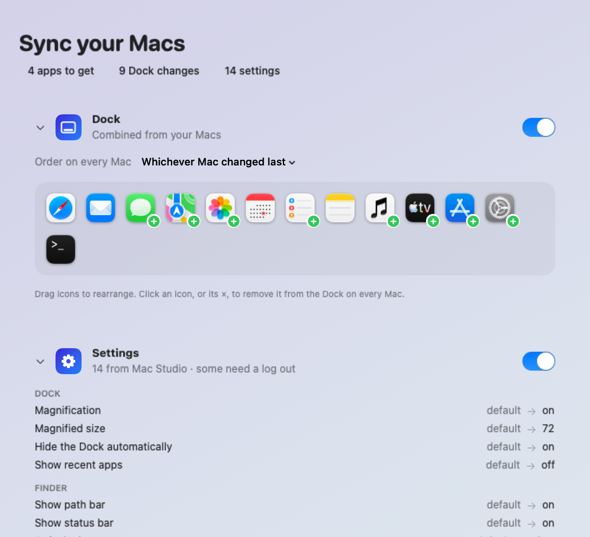
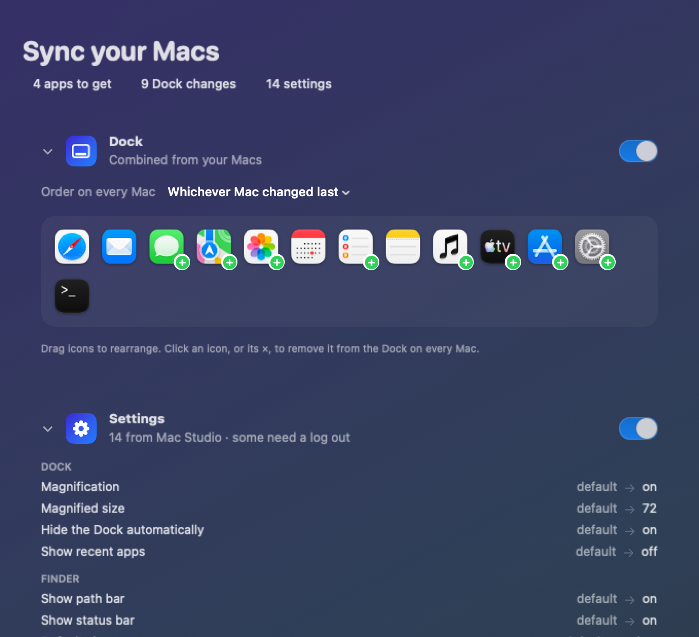
Features
Everything that makes a Mac yours
Each part has its own section in the sync window, with a switch for the whole section and one for each item.
Dock
- One combined Dock on every Mac
- Drag icons to rearrange, click to remove
- Pick which Mac's order everyone keeps
- Saved to iCloud seconds after a change
- Optionally applied when you open the lid
Apps
- Homebrew apps install by themselves
- App Store apps open their App Store page
- Downloaded apps come from the developer
- Downloads checked against their checksums
- Command-line tools from Homebrew too
Settings
- Trackpad, keyboard and mouse
- Finder, Dock and screenshots
- The settings of apps you pick
- Keep any one setting to a single Mac
- Passwords and keys never copied
Remove everywhere
- Remove an app from all your Macs at once
- Homebrew uninstalls; others go to the Trash
- Each Mac asks before removing it there
- Or remove it from just this Mac
- Bring Back if you change your mind
You choose
- Switch off apps a Mac doesn't need
- Choose what this Mac shares
- All on and all off for each section
- Every choice is remembered
Safe
- Preview everything before Apply
- A restore point before every Apply
- History: go back to any of the last 20
- Updates itself, quietly, when you sit down
Config files
- Shell: zsh, fish, bash, Starship
- Git config and global ignores
- VS Code, Cursor, Zed, Neovim, Ghostty, tmux
- The fonts you installed
- A file with a key in it stays home
AI setup
- Skills for Claude, Codex and Cursor
- CLAUDE.md, AGENTS.md, agents, commands and rules
- MCP servers and Claude Code plugins
- API keys taken out; each Mac keeps its own
Ready to work
- The same apps open at login
- VS Code extensions, npm, uv and Homebrew taps
- Steam games, downloaded by Steam
- Photoshop, Camera Raw and iStat Menus settings
- A sign-in list, password manager first
Inside the app
The sync window, section by section
Every section folds open and shut, has a switch for the whole thing, and one for each item. Your choices wait at the bottom until you press Apply.
Menu bar
Click the MacSync icon at the top of your screen.
- Every Mac you use, when it last saved, and which one has the latest changes
- Warns you when a Mac is on an older MacSync
- Review Changes opens the sync window; Sync Now checks iCloud right away
- Undo Last Apply puts this Mac back the way it was
- The gear has History, Open at Login, Update Automatically and the lid-open Dock option
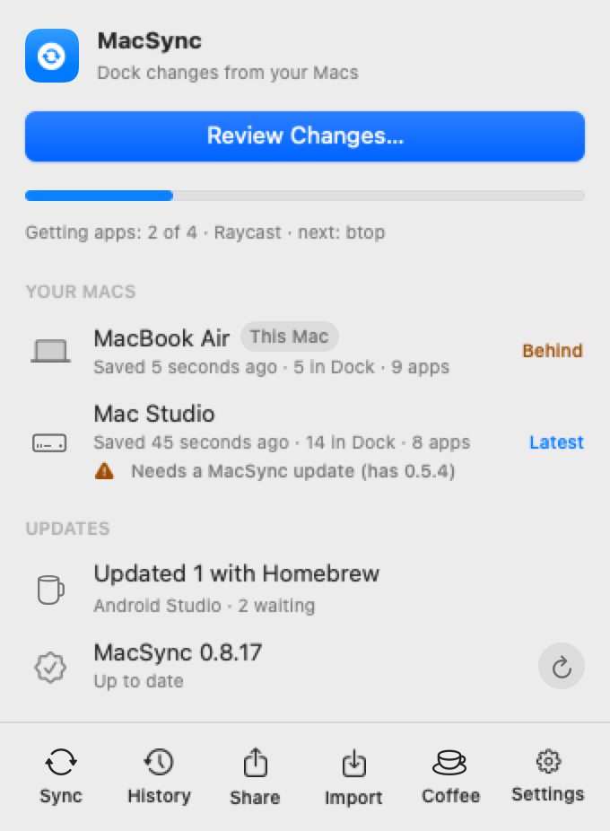
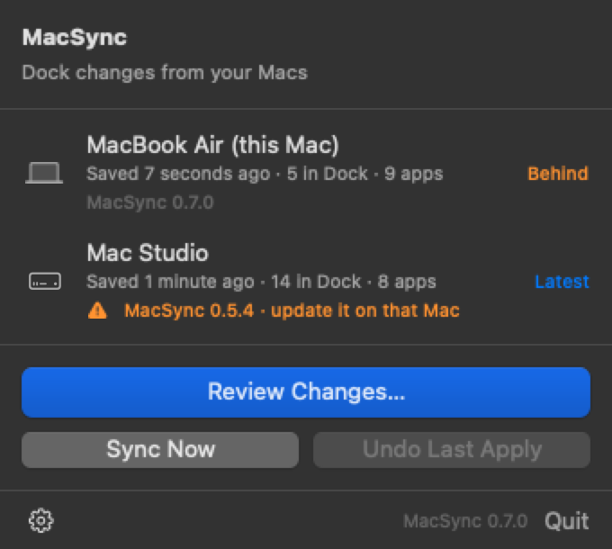
Dock
One Dock for all your Macs.
- Shows the combined Dock every Mac will get
- Drag icons to change the order; click one, or its ×, to take it off every Dock
- Pick whose order wins: whichever Mac changed last, or one Mac you choose
- Changes on another Mac are picked up live, even while this window is open
- Switch it off to leave this Mac's Dock alone
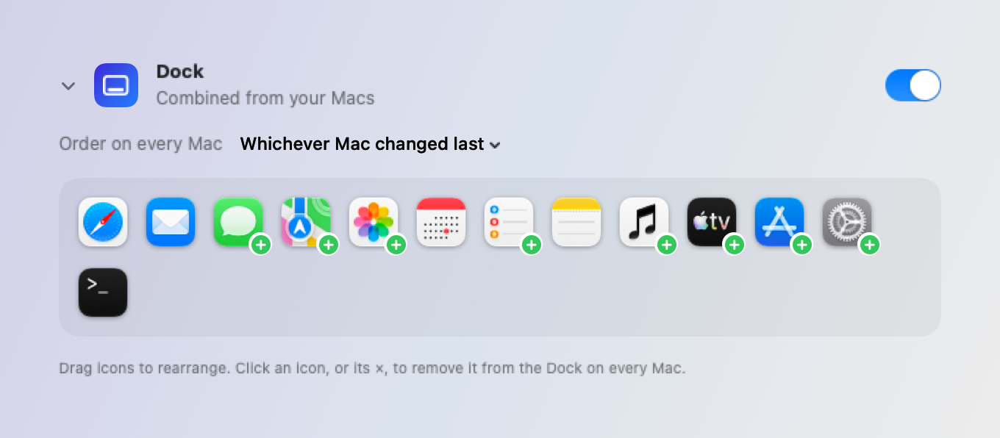
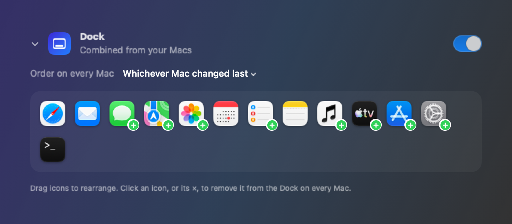
Apps on your other Macs
Apps another Mac has and this one doesn't.
- Each app with its icon and what it does; click it to open the developer's page
- Homebrew apps install with Homebrew; the rest download from the developer, never from iCloud
- Get All, or Install one at a time
- Switch off what you don't need here, like Blender on a laptop. MacSync remembers
- The trash can removes an app from all your Macs
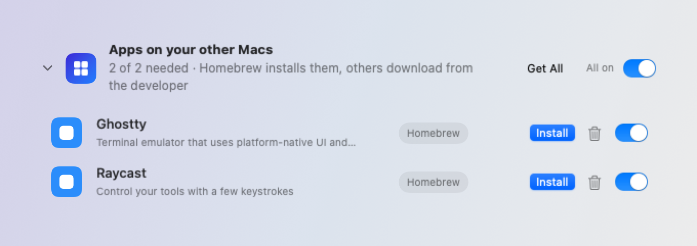
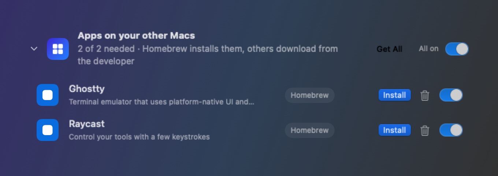
App Store apps
Apps you got from the Mac App Store.
- Listed apart, because only the App Store can install them
- Open in App Store takes you straight to the app's page; click Get there
- Same switches: keep one off and it isn't offered again
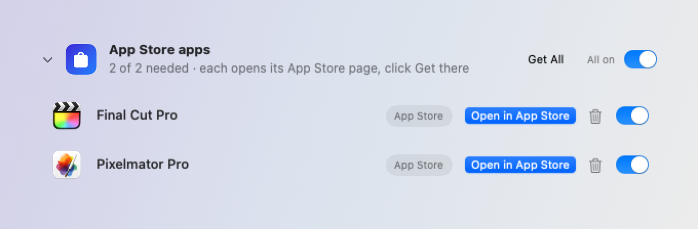
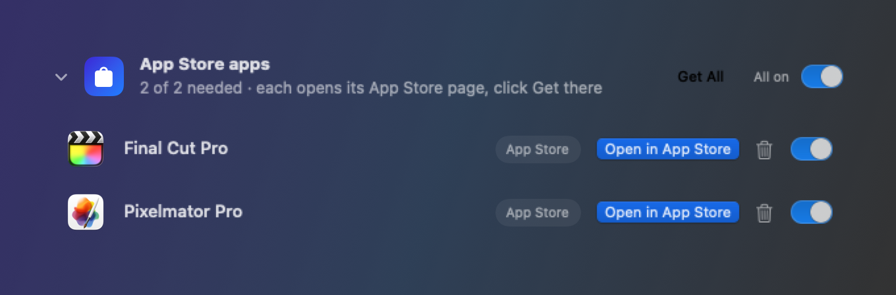
Command-line tools
Homebrew packages, like ripgrep or bat.
- Installed with Homebrew in one go, or one by one
- Remove a tool and it can be uninstalled on every Mac
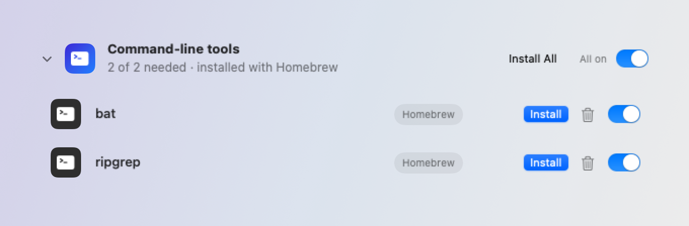
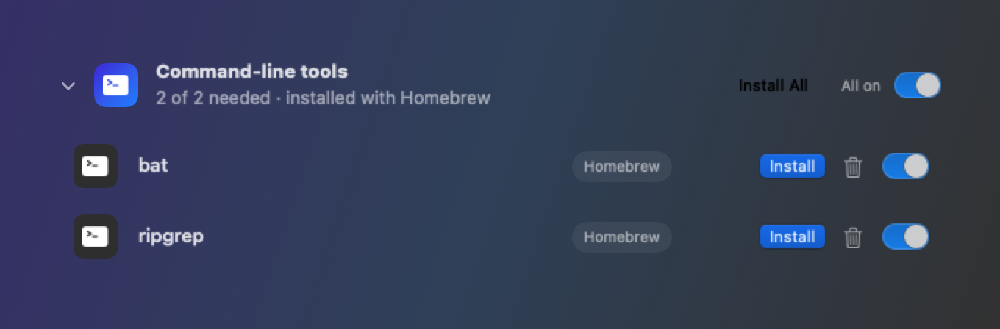
ArtCraft
Every app in ArtCraft Launcher's catalog.
- Install All, Update All or Remove All, or each app on its own
- New apps in the catalog show up here by themselves
- Downloads are checked against ArtCraft's checksums and signature
- Installed into the launcher's folder and listed in the launcher
- Remove asks: from all your Macs, or this Mac only
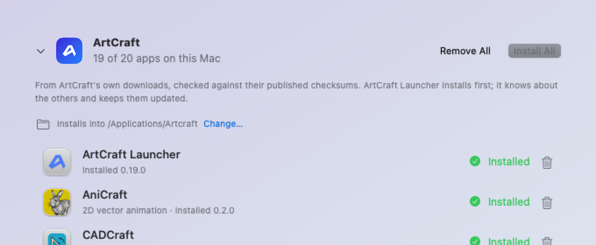
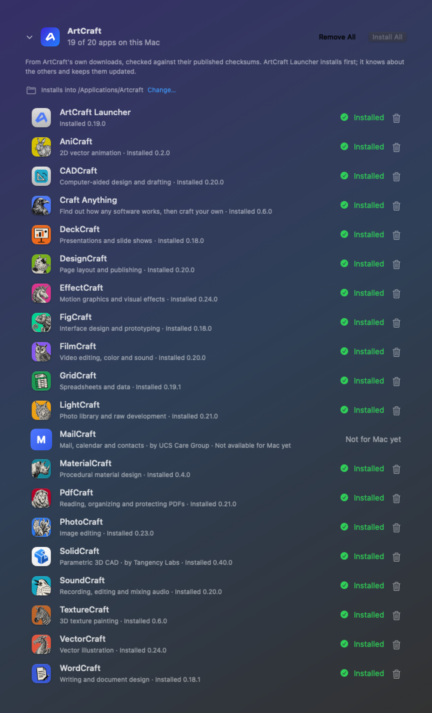
Removed on your other Macs
Apps you deleted somewhere else.
- Delete an app on one Mac and the others offer to remove it too
- Uninstall here, or Keep Here if this Mac still needs it
- Homebrew uninstalls its apps; others go to the Trash, so nothing is lost
- Every Remove asks: from all your Macs, or this Mac only
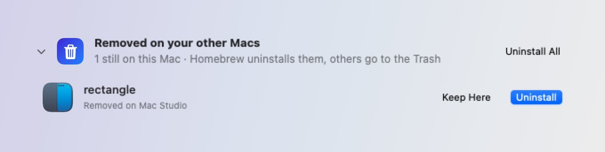
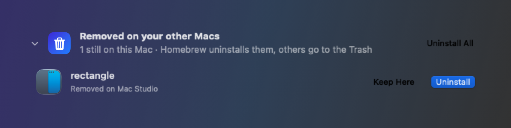
Settings
Trackpad, keyboard, Finder, Dock, appearance and screenshots.
- Change a setting on any Mac and the others offer it here, old value next to new
- Switch off any setting to keep it to this Mac only
- Nothing changes until you press Apply
- Passwords, tokens and other secrets are never read or copied
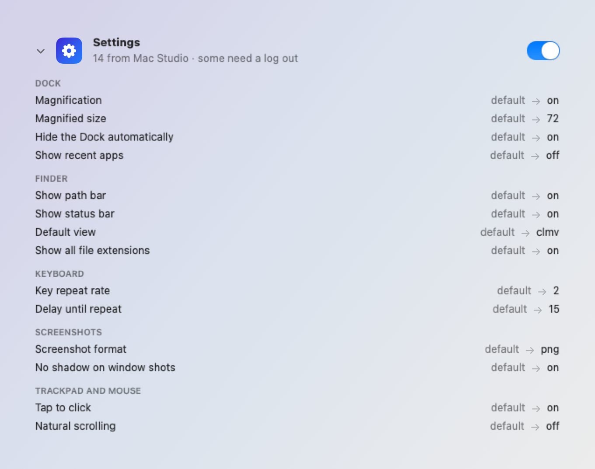
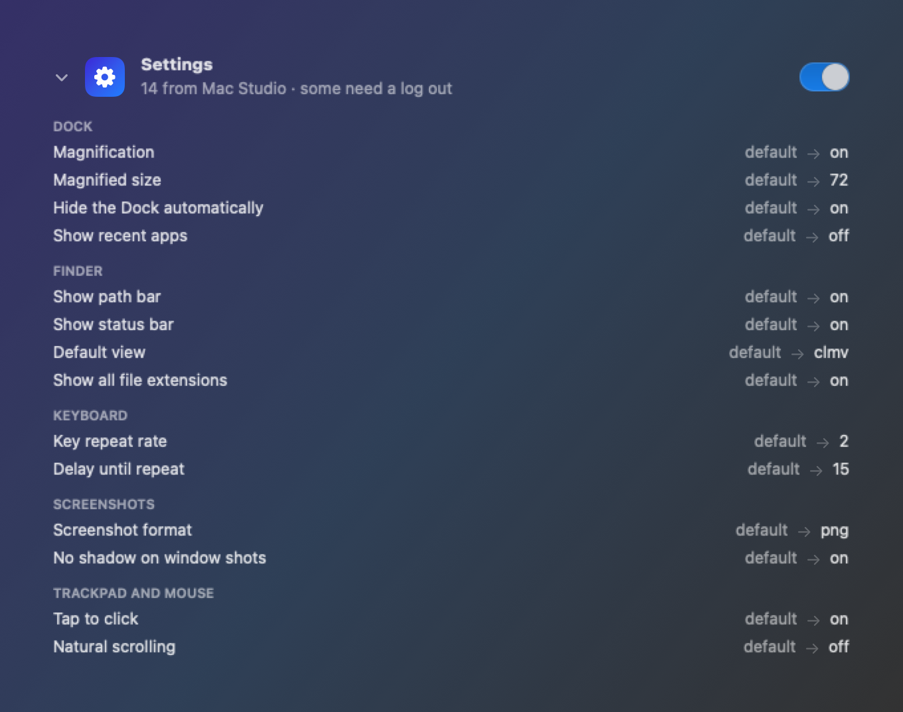
Config files
Shell, Git, editors, terminals, Raycast and fonts.
- A file changed on another Mac shows here, with the lines that change
- The newest copy wins, and your own newer edits are never replaced
- Files with a key, token or password stay on their Mac, and it tells you which line
- Keep any file to this Mac, or remove it from this Mac or all of them
- Files a dotfiles folder manages through links are left to it
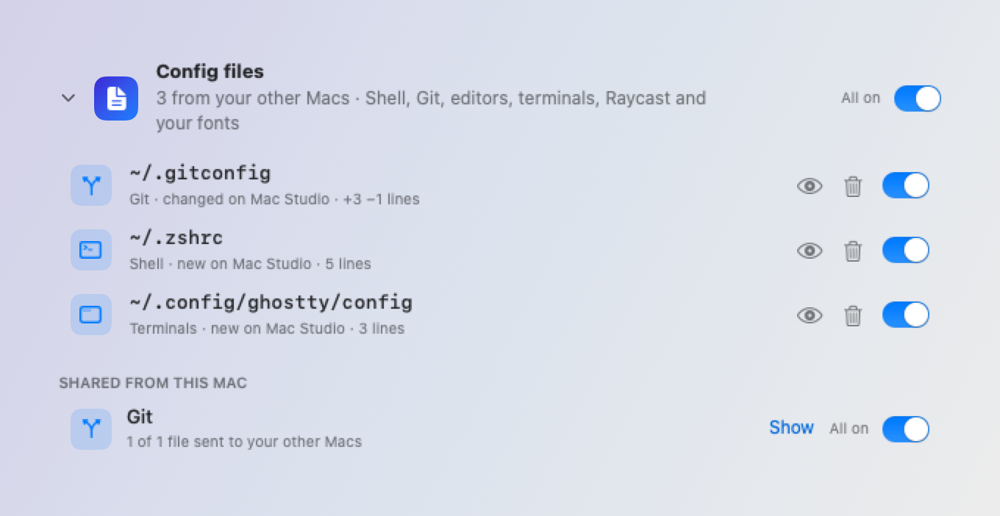
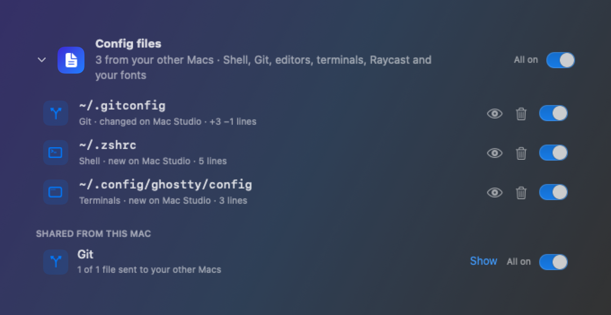
AI setup
Claude Code, Codex, Cursor and the Claude app.
- Skills, agents, commands, rules, CLAUDE.md and AGENTS.md
- MCP servers and settings, with API keys taken out: each Mac keeps its own
- Claude Code plugins install from their marketplace
- Every file is checked again for secrets before it leaves the Mac
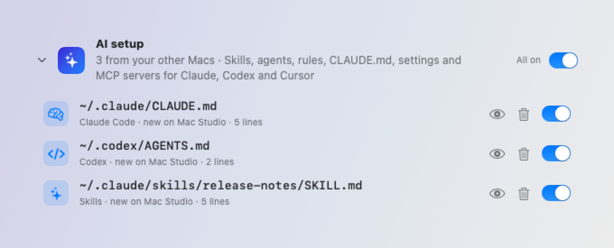
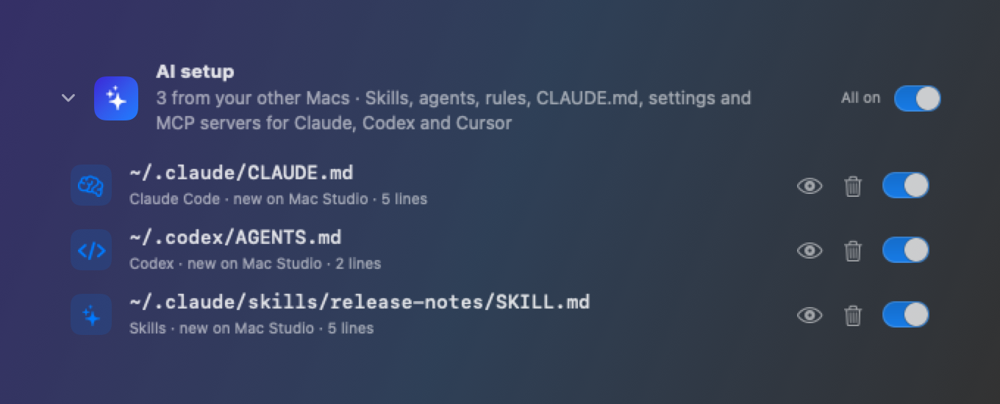
Sign in to your apps
After apps install, the ones that need an account.
- Your password manager comes first, so it can fill in the rest
- A hint for each app: scan the QR code for WhatsApp, export and import for Raycast
- Open, sign in, then Done. MacSync never types a password
- Find Apps adds every app on this Mac that needs signing in
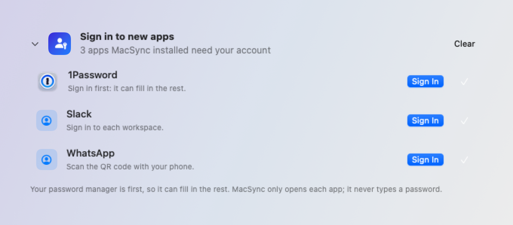
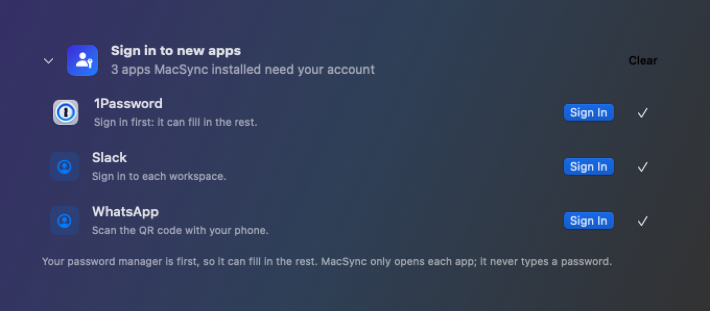
History
A restore point for every Apply.
- Each Apply saves this Mac's Dock and settings first
- Restore any point, not just the last one
- Installed apps stay installed; the last 20 points are kept
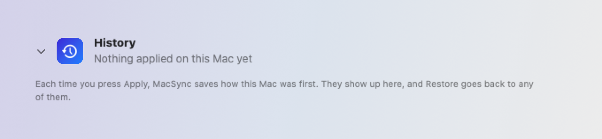
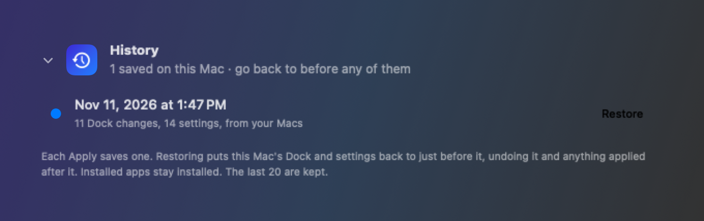
ArtCraft
The whole ArtCraft suite, on every Mac
MacSync reads ArtCraft Launcher's own catalog, so every Craft app is there, official and community, and new ones appear as ArtCraft adds them.


In MacSync
- Every app with its version, and whether it's installed
- Install All, Update All, or one at a time
- Remove from all Macs, or from this Mac only
- Switch off the ones a Mac doesn't need
Done properly
- From ArtCraft's official downloads
- Checked against published checksums and the developer's signature
- Installed in ArtCraft Launcher's own folder
- Recorded in the launcher, so it keeps them updated
How it works
Three steps, all on your Macs
Each Mac saves its setup
- A small file per Mac in your iCloud Drive
- Dock, app list and chosen settings
- Updated seconds after a change
The others see what's new
- Apps to add, Dock changes, settings
- All in one window, grouped
- The menu bar icon tells you when
You press Apply
- A restore point is saved first
- Undo in one click
- Or go back to any of the last 20
Privacy
What syncs, and what never does
Kept the same
- Dock apps, order, icon size and position
- Apps from Homebrew, the App Store and developers
- Command-line tools
- System settings and the app settings you pick
- Hot corners, input sources, shortcuts and trackpad gestures
- Config files, fonts, AI skills and rules, MCP servers
- Login items, extensions, npm and uv tools, Claude Code plugins
Never copied
- Passwords, tokens, API keys and license keys
- SSH and GPG keys, ~/.aws, shell history, .env files
- Window positions and per-Mac details
- Your documents, photos and projects
- The apps themselves: they come from where they're published
Keyboard
Raycast and Terminal too
- Raycast: Open Sync Window, Sync Now, Apply Dock Layout, Undo, Show Status, Show History
- The
macsynccommand comes with the app macsync://links open the window or History
# each Mac and whether it's in sync macsync status # what applying would change macsync preview # apply, after the preview macsync apply # go back macsync undo macsync restore-points
Questions
Good to know
Do I need an account or a server?
No. MacSync only uses your own iCloud Drive. Turn on iCloud Drive on each Mac, signed in to the same Apple Account.
Will it delete my apps?
Only when you ask. "Remove from all Macs" uninstalls an app after you confirm, and each other Mac asks before removing it there. Homebrew uninstalls its own apps; anything else goes to the Trash, where you can put it back.
How does it install apps I downloaded myself?
It finds where the app is published, through Homebrew's public list or the app's own update feed, downloads it from there, checks it, and installs it or opens the installer for you.
Does it work with ArtCraft Launcher?
Yes. MacSync installs Craft apps into the launcher's install folder and records them in the launcher's own list, so the launcher shows them as installed and keeps them updated.
What if I don't like a change?
Press Undo in the menu, or open History and restore any of the last 20 applies. Installed apps stay installed.
How does it stay up to date?
MacSync checks for a new version when your Mac wakes or unlocks, and at most every 30 minutes, installs it and restarts into it. With Homebrew, it updates through Homebrew.
Is it open source?
Yes, under the MIT license. The code is on GitHub.